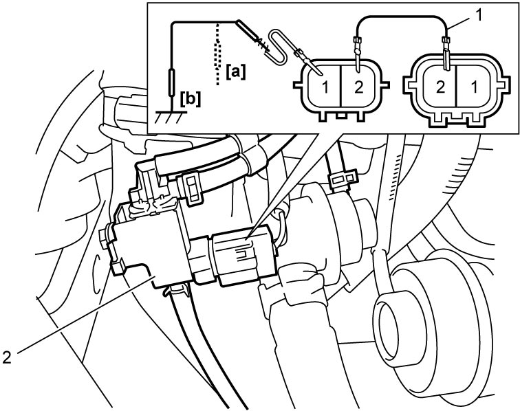
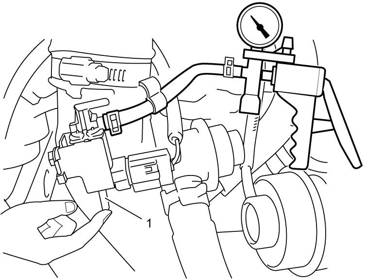
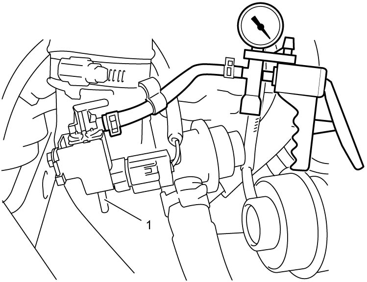
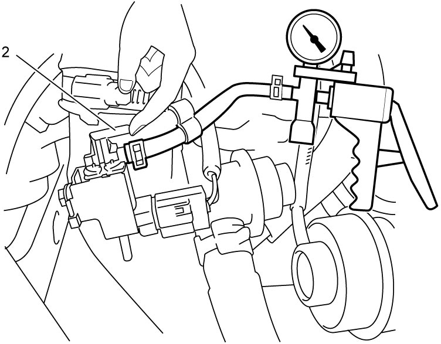
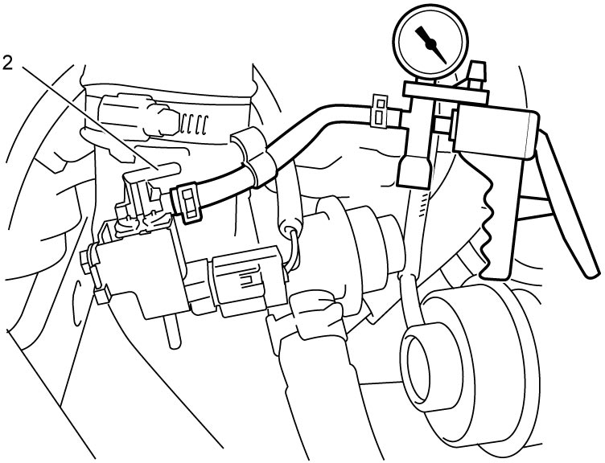

1C
| ABV-VSV On-Vehicle Inspection |
1)Remove engine cover. 
2)Prepare to operate ABV-VSV as follows.
•Using SUZUKI scan tool:
a.Connect SUZUKI scan tool to DLC (1) with ignition “OFF”.

 b.With ignition “ON”, clear DTC and select “Active Test” mode on SUZUKI scan tool.
b.With ignition “ON”, clear DTC and select “Active Test” mode on SUZUKI scan tool.
•Without using SUZUKI scan tool: "Expand image")
NOTE:
ABV-VSV is operated using scan tool as follows.
•ABV-VSV is OFF: 0%
•ABV-VSV is ON: 100%
•ABV-VSV is ON: 100%
a.Connect service wire (1) between ABV-VSV (2) and ABV-VSV connector with ignition “OFF”.
b.Set ignition “ON”.
b.Set ignition “ON”.
NOTE:
ABV-VSV is operated using service wire as follows.
•ABV-VSV is OFF:
[a]: Unground “YEL” harness side terminal of ABV-VSV.
•ABV-VSV is ON:
[b]: Ground “YEL” harness side terminal of ABV-VSV.
[a]: Unground “YEL” harness side terminal of ABV-VSV.
•ABV-VSV is ON:
[b]: Ground “YEL” harness side terminal of ABV-VSV.

 "Expand image")
3)Set ignition “OFF”.
4)Disconnect vacuum hoses (1) from ABV-VSV.
5)Disconnect vacuum hose (2) from air bypass valve.
 "Expand image")
7)Set ignition “ON”.
8)Check ABV-VSV operation as follows.
a)Close port (1) with your finger or a rubber plug and check that vacuum of –60 kPa (–0.6 kgf/cm2, –8.7 psi, –0.6 bar) can be applied when ABV-VSV is turned off.

 "Expand image")
b)Open port (1) and check that the vacuum decreases when ABV-VSV is turned off.

 "Expand image")
c)Close port (2) with your finger or a rubber plug and check that vacuum of –60 kPa (–0.6 kgf/cm2, –8.7 psi, –0.6 bar) can be applied when ABV-VSV is turned on.

 "Expand image")
d)Open port (2) and check that the vacuum decreases when ABV-VSV is turned on.

 "Expand image")
9)If faulty condition is found, check the following items.
•Wire harness and connections
•ABV-VSV
•Vacuum hose
•ABV-VSV
•Vacuum hose